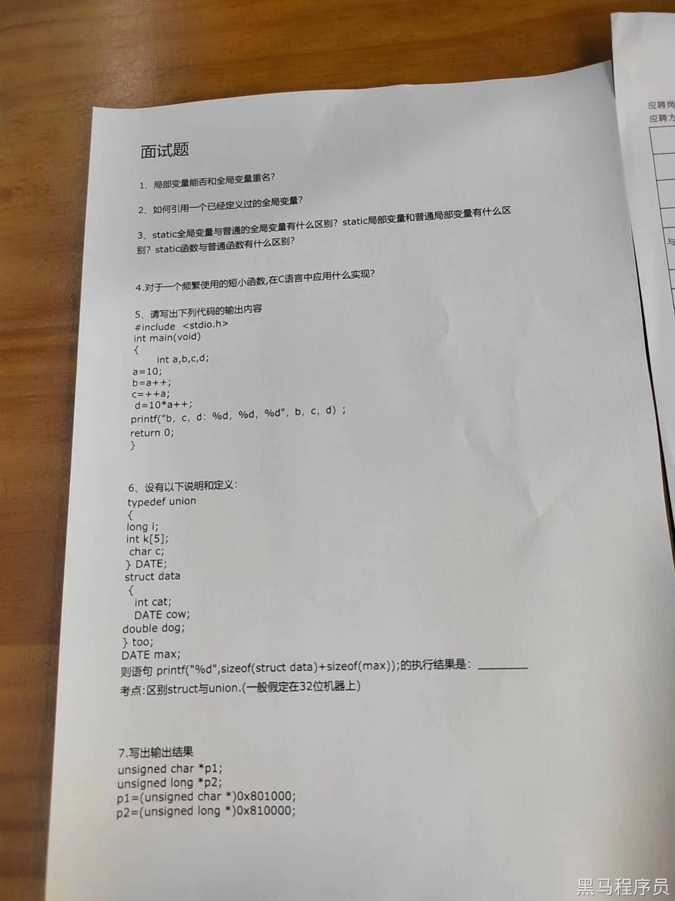
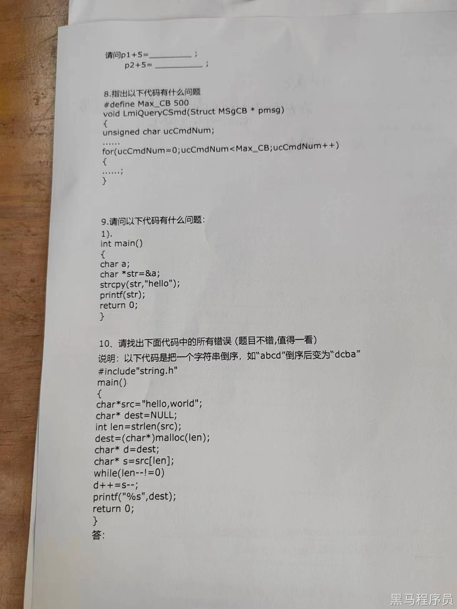
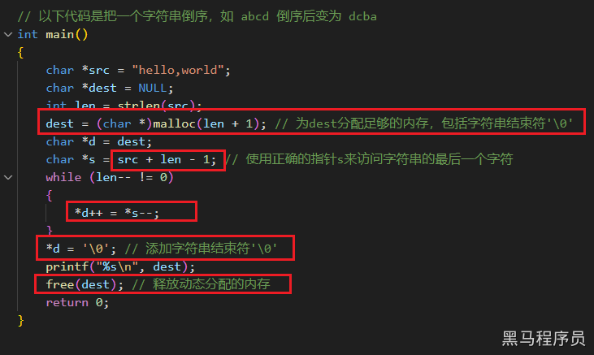

<!DOCTYPE lake>
<h2 data-lake-id="SLpe2" id="SLpe2"><span data-lake-id="ufc13f2bf" id="ufc13f2bf">公司介绍</span></h2><h2 data-lake-id="GayQF" id="GayQF"><span data-lake-id="u320ff496" id="u320ff496">面试题</span></h2><p data-lake-id="uf73270a4" id="uf73270a4"></p><p data-lake-id="uc603624d" id="uc603624d"></p><h2 data-lake-id="SUQdM" id="SUQdM"><span data-lake-id="u7e00fe19" id="u7e00fe19">参考答案<br/><br/></span></h2><p data-lake-id="ud26c573b" id="ud26c573b"><span data-lake-id="u9c303c10" id="u9c303c10">1. 可以重名<br/></span><span data-lake-id="u2e9630ef" id="u2e9630ef">2. 在函数里直接使用即可，如果要在其他文件中使用，需要使用`extern`关键字声明。</span></p><p data-lake-id="ua2d7b21d" id="ua2d7b21d"><span data-lake-id="ue820d61f" id="ue820d61f"><br/></span><span data-lake-id="ucf78722f" id="ucf78722f">3. </span></p><p data-lake-id="u9e0fd480" id="u9e0fd480"><strong><span data-lake-id="u5b286a26" id="u5b286a26">Static全局变量与普通全局变量的区别:</span></strong><span data-lake-id="u99b979c7" id="u99b979c7"><br/></span><span data-lake-id="u99cc4dd4" id="u99cc4dd4">作用域：Static全局变量只在当前文件中可见，而普通全局变量可以被其他文件访问（使用extern声明）<br/></span><span data-lake-id="ud2dd8e40" id="ud2dd8e40">初始化：Static全局变量默认初始化为0，除非你显式赋予其初值，而普通全局变量在没有明确初始化的情况下将包含未定义的值。<br/></span><strong><span data-lake-id="u094677a2" id="u094677a2">Static局部变量与普通局部变量的区别:</span></strong><span data-lake-id="u45efceb8" id="u45efceb8"><br/></span><span data-lake-id="ub28aeaf4" id="ub28aeaf4">生命周期：Static局部变量的生命周期与程序运行时间一样长，而普通局部变量的生命周期仅在其定义的作用域内。<br/></span><span data-lake-id="u50908ad9" id="u50908ad9">初始化：Static局部变量只在第一次进入定义的作用域时初始化，之后保留其值，而普通局部变量每次进入作用域都会重新初始化。</span></p><p data-lake-id="uf645ae29" id="uf645ae29"><strong><span data-lake-id="u2bbf5427" id="u2bbf5427">Static函数与普通函数的区别:</span></strong><span data-lake-id="ub906ba74" id="ub906ba74"><br/></span><span data-lake-id="ub9bd1380" id="ub9bd1380">作用域：Static函数具有文件作用域，只能在定义它的文件中使用，而普通函数可以被其他文件访问。</span></p><p data-lake-id="u264b4356" id="u264b4356"><span data-lake-id="uc6f823c1" id="uc6f823c1"><br/></span><span data-lake-id="u2f68b921" id="u2f68b921">4. 在C语言中，对于频繁使用的短小函数，可以考虑使用内联函数（inline functions）来优化性能。内联函数的主要目的是减少函数调用的开销，特别是在函数非常短小的情况下，因为函数调用通常涉及将控制从一个位置传递到另一个位置，这会引入一定的开销。内联函数将函数的代码插入到调用函数的地方，从而消除了函数调用的开销。<br/><br/></span><span data-lake-id="uad9c6ce2" id="uad9c6ce2">在函数声明或定义前面使用 inline 关键字可以创建内联函数。以下是一个示例：<br/></span><span data-lake-id="ua7cde20f" id="ua7cde20f">inline int add(int a, int b) {<br/></span><span data-lake-id="u971e9abb" id="u971e9abb">return a + b;<br/></span><span data-lake-id="u3abfb68a" id="u3abfb68a">}</span></p><p data-lake-id="u4e0f8e6d" id="u4e0f8e6d"><span data-lake-id="ua728f910" id="ua728f910"><br/></span><span data-lake-id="u12c22096" id="u12c22096">5. b, c, d: 10,12,120  </span></p><p data-lake-id="u2621e748" id="u2621e748"><span data-lake-id="u7a8301d5" id="u7a8301d5">​</span><br/></p><p data-lake-id="u6525d67c" id="u6525d67c"><span data-lake-id="u749abd71" id="u749abd71"><br/></span><span data-lake-id="u6ee284dd" id="u6ee284dd">6. 52  <br/></span><span data-lake-id="ub14fb2fd" id="ub14fb2fd">其中sizeof(struct data)是32=4+20+8，sizeof(max)是20表示union中最大的int k[5]占用20个字节。</span></p><p data-lake-id="u4ef17201" id="u4ef17201"><span data-lake-id="ub101227b" id="ub101227b">​</span><br/></p><p data-lake-id="u1f111385" id="u1f111385"><span data-lake-id="u69d063af" id="u69d063af">7.<br/></span><span data-lake-id="ube01a3dc" id="ube01a3dc">p1 是一个指向 unsigned char 类型的指针。p1 + 5 将指向 0x801005<br/></span><span data-lake-id="u44bcb2a7" id="u44bcb2a7">p2 是一个指向 unsigned long 类型的指针。如果是32位系统，它将指向 0x810014（增加了5个unsigned long的大小，每个大小为4字节）</span></p><p data-lake-id="u1f8ca95f" id="u1f8ca95f"><span data-lake-id="u2eb7b0eb" id="u2eb7b0eb"><br/></span><span data-lake-id="u86a58a2c" id="u86a58a2c">8. unsigned char ucCmdNum;最大值是255，不能到500</span></p><p data-lake-id="u3ba2c160" id="u3ba2c160"><span data-lake-id="u82c56c80" id="u82c56c80"><br/></span><span data-lake-id="u5b2d20cc" id="u5b2d20cc">9.  没有为字符指针str分配足够的内存来存储字符串"hello"。应使用char str[6]; </span></p><p data-lake-id="uc11aea86" id="uc11aea86"><span data-lake-id="u9aa907de" id="u9aa907de"><br/></span><span data-lake-id="u2143d5c4" id="u2143d5c4">10. </span></p><p data-lake-id="ubc57e182" id="ubc57e182"><span data-lake-id="u726472c7" id="u726472c7"><br/><br/></span></p>